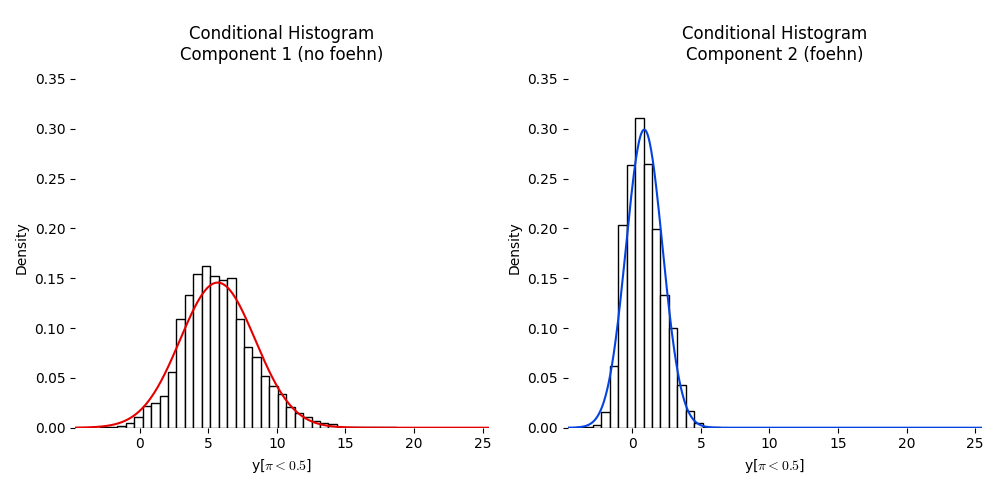
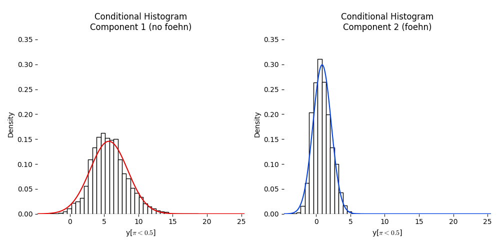

Foehnix Demo¶
Foehnix and Pandas
In [1]: import foehnix
In [2]: import pandas as pd
Load Ellboegen and Sattelberg data, merge and create filter
In [3]: ellboegen = pd.read_csv('../data/ellboegen.csv', delimiter=';', skipinitialspace=True)
In [4]: sattelberg = pd.read_csv('../data/sattelberg.csv', delimiter=';', skipinitialspace=True)
In [5]: ellboegen.head()
Out[5]:
timestamp dd ff rh t
0 1136077200 171.0 0.6 90.0 -0.4
1 1136080800 268.0 0.3 100.0 -1.8
2 1136084400 115.0 5.2 79.0 0.9
3 1136088000 152.0 2.1 88.0 -0.6
4 1136091600 319.0 0.7 100.0 -2.6
In [6]: data = pd.merge(ellboegen, sattelberg, on='timestamp', how='outer', suffixes=('', '_crest'), sort=True)
In [7]: data.index = pd.to_datetime(data.timestamp, unit='s')
In [8]: train = data.iloc[:-10].copy()
In [9]: test = data.iloc[-10:].copy()
In [10]: train['diff_t'] = train['t_crest'] + 10.27 - train['t']
In [11]: ddfilter = {'dd': [43, 223], 'dd_crest': [90, 270]}
Run the model and show a summary
In [12]: model = foehnix.Foehnix('diff_t', train, concomitant='ff', filter_method=ddfilter, switch=True, verbose=True)
Check the model¶
Show a summary of the model results
In [13]: model.summary(detailed=True)
Number of observations (total) 113942 (5527 due to inflation)
Removed due to missing values 38700 (34.0 percent)
Outside defined wind sector 50793 (44.6 percent)
Used for classification 24449 (21.5 percent)
Climatological foehn occurance 17.93 percent (on n = 75242)
Mean foehn probability 17.69 percent (on n = 75242)
Log-likelihood: -55763.8, 6 effective degrees of freedom
Corresponding AIC = 111539.7, BIC = 111588.3
Number of EM iterations 6/100 (converged)
Time required for model estimation: 0.7 seconds
------------------------------------------------------
Components: t test of coefficients
Estimate Std. Error t_value Pr(>|t|)
(Intercept).1 5.673516 0.025089 226.133738 0.0
(Intercept).2 0.866782 0.010944 79.201240 0.0
------------------------------------------------------
Concomitant model: z test of coefficients
Estimate Std. Error z_value Pr(>|z|)
cc.Intercept 0.912294 0.075737 12.045589 2.046103e-33
cc.ff 3.996331 0.013613 293.566954 0.000000e+00
Number of IWLS iterations 3 (converged)
Dispersion parameter for binomial family taken to be 1.
Plot some model assessment plots
In [14]: model.plot('loglik', log=False)
In [15]: model.plot('loglikcontribution', log=True)
In [16]: model.plot('coef', log=True)
In [17]: model.plot('hist')


 

Hovmoeller Diagram¶
The image function plots a Hovmoeller Diagram to assess foehn freqency
In [18]: model.plot('image', deltat=3600, deltad=7)